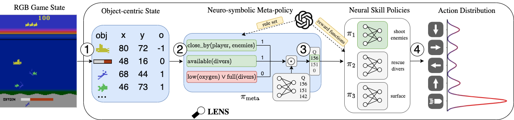

Improve RL with combining symbolic meta-policies with neural skills.
×
Interpretable Reinforcement Learning via Meta-Policy Guidance
European Workshop on Reinforcement Learning 2025
Paper
Poster
Corresponding Authors
Raban Emunds
Code
JAXAtari: Jax based Atari Learning Environment (Experimental)
If you like our work, feel free to share it.
Share this Paper
https://ml-research.github.io/people/jblueml/papertrees/lens
Copy Link
Close
Share